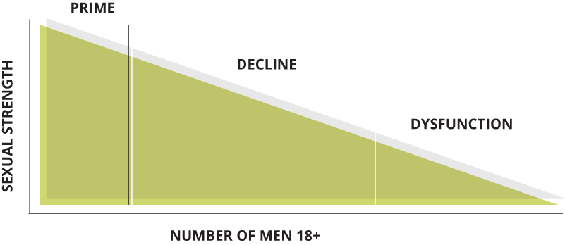

Upgrade Your Sex Life With PROVARIN

If You're A Man Over 50, PROVARIN Can Improve Your Sexual Strength Significantly.
Introducing PROVARIN.
The first non-prescription, once-daily tablet to combat Sexual Decline (SD) and build all 3 markers of Sexual Strength.
- An Active Libido and Healthy Desire for Sex.
- Firm, Full Erections and Peak Arousal Quality (PAQ).
- Long-Lasting Erections, Endurance, and Sexual Stamina.
Available Now Without A Prescription, PROVARIN Combats Sexual Decline (SD).
Stress, lifestyle, and medical conditions combine to initiate Sexual Decline as men age.
Between the stages of sexual prime and sexual dysfunction, sexual decline is the stage that affects the most men ages 35-70.
Over 71 million men report symptoms related to SD.
Symptoms can include:
- Diminished Libido and Desire for Sex.
- Softer, Smaller Difficult-to-Achieve Erections.
- Reduced Stamina, Endurance and Sexual Energy.
Maximize Your Sexual Strength At Any Age With PROVARIN.
Once-daily PROVARIN is the first non-prescription tablet that fuels all 3-male bio-drivers needed to maximize Sexual Strength and achieve fast, firm, long-lasting erections.
INCREASES TESTOSTERONE
STIMULATES BLOOD FLOW
ACCELERATES METABOLISM
Men taking PROVARIN report positive results.

If you're experiencing issues related to Sexual Decline, or just want to maximize your Sexual Strength, PROVARIN may be right for you.